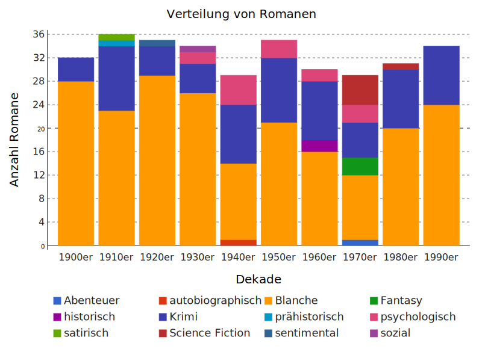
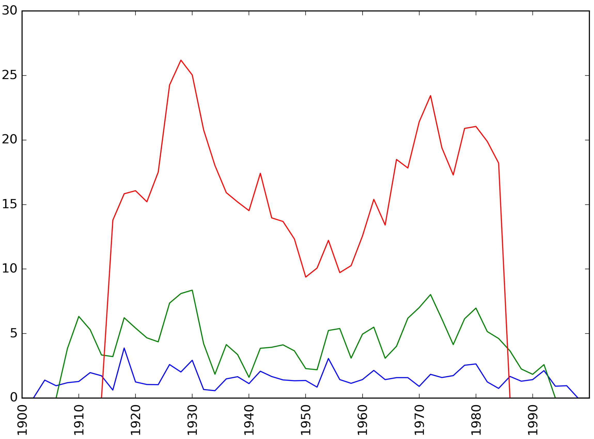
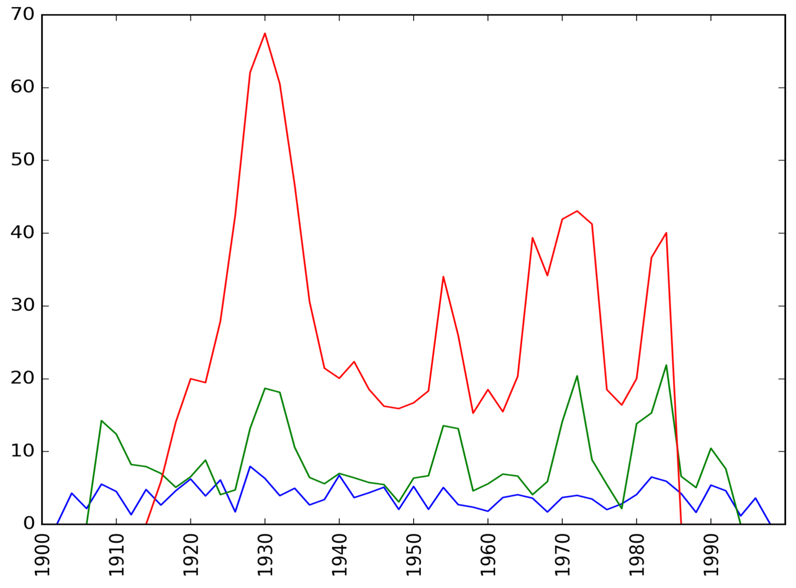
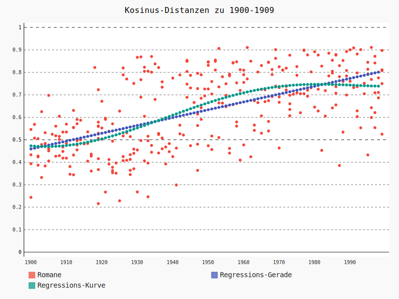
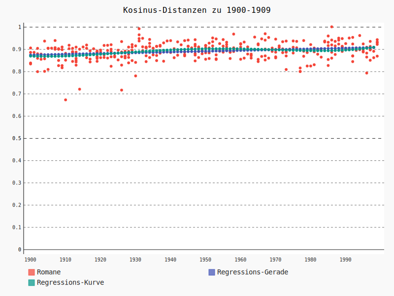

<!doctype html>
<html lang="en">
<head>
<meta charset="utf-8">
<title>Epochenschwellen FJR17</title>
<meta name="author" content="Christof Schöch">
<meta name="description" content="Slides">
<meta name="apple-mobile-web-app-capable" content="yes">
<meta name="apple-mobile-web-app-status-bar-style" content="black-translucent">
<meta name="viewport" content="width=device-width, initial-scale=1.0, maximum-scale=1.0, user-scalable=no, minimal-ui">
<link rel="stylesheet" href="css/reveal.css">
<link rel="stylesheet" href="css/theme/simple.css" id="theme">
<link rel="stylesheet" href="lib/css/zenburn.css">
<script>
var link = document.createElement( 'link' );
link.rel = 'stylesheet';
link.type = 'text/css';
link.href = window.location.search.match( /print-pdf/gi ) ? 'css/print/pdf.css' : 'css/print/paper.css';
document.getElementsByTagName( 'head' )[0].appendChild( link );
</script>
<!--[if lt IE 9]>
<script src="lib/js/html5shiv.js"></script>
<![endif]-->
</head>

<body>
<div class="reveal">
<div class="slides">
<section data-markdown="" data-separator="^\n---\n" data-separator-vertical="^\n--\n" data-charset="utf-8">
<script type="text/template">

<!--  vvvvv THIS IS WHERE THE CONTENT GOES! vvvvvvv  -->

## Epochenschwellen als Phasen beschleunigter literarischer Entwicklung?
<hr/>
<br/>
<br/>
<small>Christof Schöch, Ulrike Henny, <br/>José Calvo Tello, Katrin Betz, Daniel Schlör <br/>(CLiGS, Würzburg)</small>
<br/>
<br/>
<small>Forum Junge Romanistik<br/>Göttingen, März 2017</small>
<br/>
<br/>
<small>Folien: http://christofs.github.io/frj17</small>
<br/>
<hr/>
<p></img>&nbsp;&nbsp;&nbsp;&nbsp;&nbsp;&nbsp;</img>&nbsp;&nbsp;&nbsp;&nbsp;&nbsp;&nbsp;</img></p>


---
## Überblick
<br/>
* Fragestellung, Hypothesen und Ziele
* Textsammlung
* Methoden
* Ergebnisse
* Fazit

---
## Fragestellung, Hypothese und Ziele

--
### Literaturgeschichtliche Fragestellung
<br/>
* Gehen Transformationen literarischer Formen gleichförmig vor sich? 
* Oder gibt es Phasen beschleunigter Veränderungen?

--
### Hypothese
<br/>
* Es gibt Phasen beschleunigter Veränderung, 
<br/>die als Epochenschwellen in Frage kommen.

> "Epochen sind Zuschreibungen von bedeutsamen Übergängen. Der Übergang selber 
ist dabei eine Zäsur, die die vorangegangene Epoche von der folgenden trennt."

(Seele 2008)

--
### Hypothese
<br />

Erwartete Epochenschwelle: Zweiter Weltkrieg, 1945

--
### Fragen
<br/>
* Nachweis von beschleunigter Veränderung und Epochenschwellen ist methodisch nicht einfach.
* Welche Faktoren lösen sie aus?
* Können sie in Formen und Inhalten der Literatur nachgewiesen werden?

<!-- 
> "Wann ist etwas neu und dabei so neu, dass es in der Betrachtung ex post zur Zäsur und 
Neubenennung eines Sinnabschnitts führt?"

(Seele 2008)
-->

--
### Annahmen
<br/>
* bekannte Strukturen im Hintergrund
* konstant fortschreitende Entwicklung
* Neuheit ist i. d. R. relativ neu

> "eine Frage der Kombination und ihrer Wahrnehmung"

--
### Ziele: Veränderungen nachvollziehen
<br/>

* mit Hilfe quantitativer, digitaler Methoden
* auf einer breiten Textbasis
* formale Aspekte &amp; thematische Entwicklungen über die Zeit

--
### Ziele: Mögliche Epochenschwellen ermitteln
<br/>
wo Veränderungen...

* auf mehreren Textebenen zugleich stattfinden
* sich verändern
* besonders deutlich hervortreten
* beschleunigt sind


---
## Textsammlung

--
### Textsammlung

* französischer Roman im 20. Jahrhundert
* mindestens 1 Roman, meist 2-4 Romane pro Jahr
* 1900 bis 1999; zusammen 325 Romane, ca. 20 Millionen Tokens

--
### Autoren und Romane pro Jahr
<a href="img/novels-authors-years.svg"></a>

--
### Romane nach Dekaden und Geschlecht
<a href="img/dist_by-gender.svg"></a>

--
### Romane nach Dekaden und Untergattung
<a href="img/dist_by-subgenre.svg"></a>


---
## Methoden

--
### Methoden
<br/>
* Nachfolgeforschung zu Ted Underwood 2015 <br />
<a href="https://tedunderwood.com/2015/10/03/can-we-date-revolutions-in-the-history-of-literature-and-music/">"Can we date revolutions in the history of literature and music?"</a>
* Merkmale (was verändert sich?):
    * Topics über die Zeit (Inhaltsebene)
    * Zeitausdrücke über die Zeit (stilistischer Aspekt)
* Veränderung (wie messen wir das Ausmaß der Veränderung)
   * Kosinus-Ähnlichkeiten
   * sog. Foote-Neuheit

--
### Topic Modeling
<br/>
<a href="img/Blei-2012.png"></img></a>

<small>David Blei, "Probabilistic Topic Modeling", 2012.</small>

--
### Temporal Tagging
<br/>
* Ermittlung von Zeitausdrücken in den Roman-Texten mit <a href="https://github.com/HeidelTime/heideltime">HeidelTime</a> (Jannik Strötgen), z. B. "le 16 janvier", "cet après-midi", "à neuf heures"
* Verteilungen von relativen und proportionalen Häufigkeiten der Zeitausdrücke in den Romanen
* Für jeden Roman: Werte für jeden Typ von Zeitausdruck

--
### Messen von Veränderung über die Zeit
<br/>
* Kosinus-Ähnlichkeit (Heatmap)
* Foote-Neuheit 
* Veränderung gegenüber 1900-1902

--
### Kosinus-Ähnlichkeit (Heatmap)
<br/>
* Einteilung des Zeitraumes z. B. in 2-Jahresschritte
* Mittelwert der Werte (Topics / Zeitausdrücke)
* Berechnen der paarweisen Ähnlichkeiten zwischen allen 2-Jahreszeiträumen
* Kosinus-Ähnlichkeit als Maß für die Ähnlichkeit zwischen zwei Vektoren

--
### Foote-Neuheit
<br/>
* Maß von Jonathan Foote (2000): <a href="http://www.fxpal.com/publications/FXPAL-PR-00-094.pdf">Foote Novelty</a>
* ursprünglich für Musik entwickelt
* Wo gibt es beschleunigte Veränderungen bzw. Umbrüche?
* auf Grundlage der Kosinus-Ähnlichkeiten werden Neuheits-Werte ermittelt

--
### Abweichung von 1900-1902
<br/>
* Wie stark haben sich die Werte gegenüber dem Beginn des Jahrhunderts verändert? 
* Ebenfalls als Kosinus-Ähnlichkeit ausgedrückt


---
## Ergebnisse


--
<table>
  <tbody>
    <tr>
        <td style="border: none;"></td>
        <td style="border: none; text-align: center;"><small>Topics</small></td>
        <td style="border: none; text-align: center;"><small>Zeitausdrücke</small></td>
    </tr>
    <tr>
        <td style="border: none; vertical-align: middle"><small>Kosinus-<br/>Ähnlichkeiten</small></td>
      <td style="border: none; vertical-align: bottom; padding: 0 20px;">
        <div style="text-align:center;">
            <a href="img/topics_cosim_v2.png">
                  
            </a>
        </div>
      </td>
      <td style="border: none; vertical-align: bottom; padding: 0 20px;">
        <div style="text-align:center;">
            <a href="img/cosim-tpx-2.png">
                  
            </a>
        </div>
      </td>
    </tr>
    <tr>
        <td  style="border: none; vertical-align: middle"><small>Foote-<br/>Neuheit</small></td>
      <td style="vertical-align:top; padding: 0;"><div style="text-align:center;"><a href="img/topics_novelties_v2.png"></a></div></td>
      <td style="vertical-align:top; padding: 0;"><div style="text-align:center;"><a href="img/novelties-tpx-cosine-2.png"></a></div></td>
    </tr>
  </tbody>
</table>

--
### Kosinus-Distanz zur Grundlinie 1900-1909

<table>
    <tr>
        <td style="border: none; text-align: center;"><small>Topics</small></td>
        <td style="border: none; text-align: center;"><small>Zeitausdrücke</small></td>
    </tr>
    <tr>
        <td style="border: none; padding: 0;">
            <a href="img/dist_to_baseline_topics_2.svg"></a>
        </td>
        <td style="border: none; poadding: 0;">
            <a href="img/dist_to_baseline_tpx_2.svg"></a>
        </td>
    </tr>
</table>


---
## Fazit
<br/>

--
### Ergebnisse
<br/>
* Eigenschaften der untersuchten Merkmale über die Zeit
    * Topics: fortschreitende Veränderung<br/>
    * Zeitausdrücke: kein Trend erkennbar
* Epochenschwellen
    * Erwartungen für Umbruch um den Zweiten Weltkrieg nicht erfüllt
    * drei Phasen erkennbar: 1900-1930, 1930-1970, 1980-2000

--
### Methode
<br/>
* Bedeutung des Korpus: eigentlich repräsentatives Sample nötig
* Bedeutung der Perspektive: Wahl von Zeitfenstern beeinflusst Ergebnisse
* näher untersuchen: Welche Relevanz haben die mit Hilfe der digitalen Methoden ermittelten Phasen?


--
### Literaturhinweise
<br/>
<small>
    
* Blei, David M. (2012): "Probabilistic Topic Models." _Communications of the ACM_ 55.4. doi:10.1145/2133806.2133826.
* Foote, Jonathan (2000): "Automatic Audio Segmentation Using a Measure of Audio Novelty" <span style="font-style: italic;">IEEE International Conference on Multimedia and Expo (I)</span>, IEEE Computer Society, S. 452-458.
<a href="http://www.fxpal.com/publications/FXPAL-PR-00-094.pdf">http://www.fxpal.com/publications/FXPAL-PR-00-094.pdf</a>
* Mauch, Matthias et al. (2015): "The Evolution of Popular Music: USA 1960-2010." _Royal Society Open Science_ 2.5: 150081–150081. doi:10.1098/rsos.150081.
* Strötgen, Jannik (2015), <span style="font-style:italic;">Domain-sensitive Temporal Tagging for Event-centric Information Retrieval.</span> Dissertation. Institut für Informatik, Universität Heidelberg.
<a href="http://archiv.ub.uni-heidelberg.de/volltextserver/18357/1/thesis.pdf">http://archiv.ub.uni-heidelberg.de/volltextserver/18357/1/thesis.pdf</a>
* Underwood, Ted (2015): "Can we date revolutions in the history of literature and music?" In: <span style="font-style: italic;">The Stone and the Shell. Using large digital libraries to 
advance literary history.</span>
Blog-Post. <a href="https://tedunderwood.com/2015/10/03/can-we-date-revolutions-in-the-history-of-literature-and-music/">https://tedunderwood.com/2015/10/03/can-we-date-revolutions-in-the-history-of-literature-and-music/</a>

</small>


---
<br/>
<br/>
## Vielen Dank! 
<br/>
<br/>
<br/>
<br/>Daten: https://github.com/cligs/projects/tree/master/2017/fjr
<br/>Folien: https://christofs.github.io/fjr17/
<br/>CLiGS-Gruppe: http://cligs.hypotheses.de
<br/>
<br/>
<small>CLiGS, 2017</small>
<br/><small><a href="https://creativecommons.org/licenses/by/4.0/">CC-BY 4.0</a></small>
<br/>


<!--^^^^^^^ DON'T TOUCH UNLESS YOU KNOW WHAT YOU'RE DOING :-) ^^^^^^^-->

</script>
</section>
</div>
</div>

<script src="lib/js/head.min.js"></script>
<script src="js/reveal.js"></script>
<script>
// Full list of configuration options available at:
// https://github.com/hakimel/reveal.js#configuration
Reveal.initialize({
    controls: true,
    progress: true,
    history: true,
    center: true,
    transition: 'slide', // none/fade/slide/convex/concave/zoom
    // Optional reveal.js plugins
    dependencies: [
        { src: 'lib/js/classList.js', condition: function() { return !document.body.classList; } },
        { src: 'plugin/markdown/marked.js', condition: function() { return !!document.querySelector( '[data-markdown]' ); } },
        { src: 'plugin/markdown/markdown.js', condition: function() { return !!document.querySelector( '[data-markdown]' ); } },
        { src: 'plugin/highlight/highlight.js', async: true, callback: function() { hljs.initHighlightingOnLoad(); } },
        { src: 'plugin/zoom-js/zoom.js', async: true },
        { src: 'plugin/notes/notes.js', async: true }
        ]
    });
</script>
</body>
</html>
